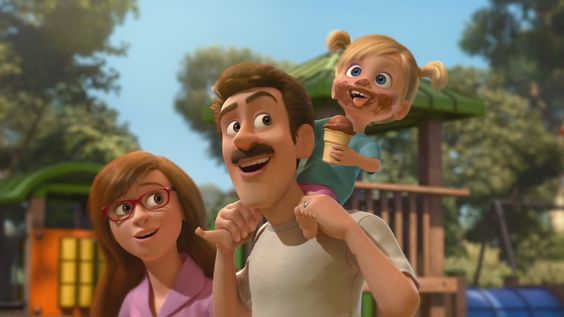

Divertida Mente trata de um tema complexo (a máquina do nosso pensamento) a partir de uma abordagem singela e didática. Não por acaso, o longa-metragem recebeu os mais importantes prêmios de melhor filme de animação
A Alegria, por exemplo, tem um formato corporal que nos lembra uma estrela. O Medo, por sua vez, tem os contornos de um nervo e é roxo. Nojinho é inteiramente verde e nos recorda um brócolis (comida que Riley não aprecia). A Raiva é como um tijolo: retangular, vermelho e pesado. A Tristeza tem um contorno de gota, como uma lágrima, e é azul.
Com a mudança para uma nova cidade, as emoções de Riley, que tem apenas 11 anos de idade, ficam extremamente agitadas. Uma confusão na sala de controle do seu cérebro deixa a Alegria e a Tristeza de fora, afetando a vida de Riley radicalmente.
